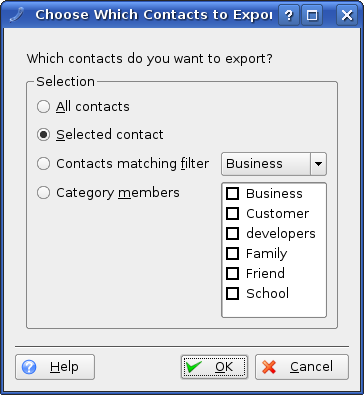

With the new import/export framework KAddressBook offers a dialog where you can select which contacts are to be exported.

The export selection dialog.
KAddressBook is able to import the following formats:
- vCard
With this entry you can import your contacts from the vCard format (RFC 2426).
- MS Exchange Personal Address Book (.PAB)
With this entry you can import your contacts from your Address book on a MS Exchange personal address book, which is used by MS Outlook and MS Outlook Express to store their contact data.
- Eudora Addressbook
With this plugin you can import your contacts from the Eudora mail client.
- CSV List
CSV (comma separated value) is a format that is used by many (address book) applications.
- Opera Addressbook
With this entry you can import your contacts from the Opera web browser.
- KDE 2 Addressbook
With this entry you can import your old contacts from a KDE 2.x installation.
- LDIF Addressbook
LDIF is a plain-text representation of LDAP data, used by Netscape® and Mozilla to store their address book data.
- GMX Address Book
To be written.
KAddressBook is able to export into the following formats:
- vCard 2.1 & 3.0
With this entry you can export your contacts to the vCard format (RFC 2426). You can either export it into the 2.1 or in the 3.0 compatible version of the vCard standard.
- CSV List
CSV (comma separated value) is a format that is used by many (address book) applications, it stores the contact information in a plaintext field separated by commas. This makes CSV very flexible and good for interaction with scripts.
- LDIF Addressbook
LDIF is a plain-text representation of LDAP data, used by Netscape® and Mozilla to store their address book data.
- GMX Address Book
To be written.
- Bookmarks Menu
This exports the stored URLs of your contacts into the Konqueror bookmarks system.
- Geo Data
To be written.